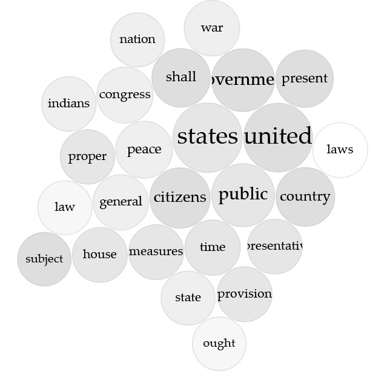
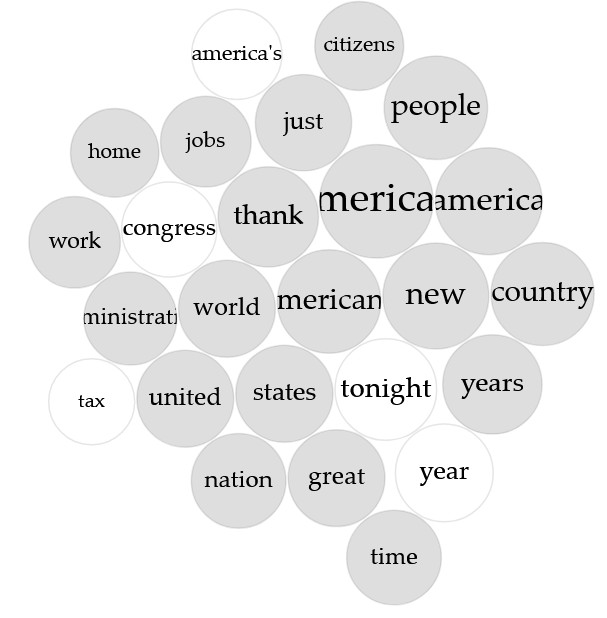

I will be comparing an contrasting the Inagural Adresses and State of The Union speeches between the first president, George Washington. And the current president, Donald Trump.
Washington
The most common words used by George Washington organized as a word cloud

The most common words used by George Washington organized as a word cluster
Trump
The most common words used by Donald Trump organized as a word cloud

The most common words used by Donald Trump organized as a word cluster